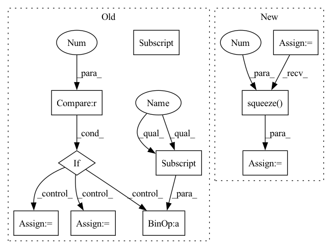

Pattern ID :33406

Before Change
score = F.log_softmax(y, dim=2)
// 因为是补齐了的，所以需要找到真正的 score
for i in range(score.shape[0]):
if i == 0:
true_scores = score[i][loc_len[i] - 1].reshape(1, -1)
else:
true_scores = torch.cat(
(true_scores, score[i][loc_len[i] - 1].reshape(1, -1)), 0)
return true_scores
def predict(self, batch):
After Change
out = torch.cat((hidden_state, context), 2)
// 因为是补齐了的，所以需要找到真正的 out
origin_len = batch.get_origin_len("current_loc")
final_out_index = torch.tensor(origin_len) - 1
final_out_index = final_out_index.reshape(final_out_index.shape[0], 1, -1)
final_out_index = final_out_index.repeat(1, 1, 2*self.hidden_size).to(self.device)
out = torch.gather(out, 1, final_out_index).squeeze(1) // batch_size * (2*hidden_size)
out = self.dropout(out)
y = self.fc_final(out) // batch_size * loc_size
In pattern: SUPERPATTERN
Frequency: 3
Non-data size: 10
Instances
Fragment ID: 96180731
Project Name: libcity/bigscity-libcity
Commit Name: ec61c9cd984d1c86ee715380ed3b65b4222c8d1f
Time: 2021-05-06
Author: 33283819+WenMellors@users.noreply.github.com
File Name: trafficdl/model/trajectory_loc_prediction/DeepMove.py
M Class Name: DeepMove
N Class Name: DeepMove
M Method Name: forward(2)
N Method Name: forward(2)
M Parent Class: AbstractModel
N Parent Class: AbstractModel
M File Name: trafficdl/model/trajectory_loc_prediction/DeepMove.py
N File Name: trafficdl/model/trajectory_loc_prediction/DeepMove.py
M Start Line: 122
M End Line: 175
N Start Line: 152
N End Line: 163
'>
Before Change
y = self.fc(out)
score = F.log_softmax(y, dim=2) // calculate loss by NLLoss
// 因为是补齐了的，所以需要找到真正的 score
loc_len = batch.get_origin_len("current_loc")
for i in range(score.shape[0]):
if i == 0:
true_scores = score[i][loc_len[i] - 1].reshape(1, -1)
else:
true_scores = torch.cat(
(true_scores, score[i][loc_len[i] - 1].reshape(1, -1)), 0)
return true_scores
After Change
out, out_len = pad_packed_sequence(out, batch_first=True)
// out = out.permute(1, 0, 2)
origin_len = batch.get_origin_len("current_loc")
final_out_index = torch.tensor(origin_len) - 1
final_out_index = final_out_index.reshape(final_out_index.shape[0], 1, -1)
final_out_index = final_out_index.repeat(1, 1, self.hidden_size).to(self.device)
out = torch.gather(out, 1, final_out_index).squeeze(1) // batch_size * hidden_size
out = F.selu(out)
out = self.dropout(out)
y = self.fc(out)
score = F.log_softmax(y, dim=1) // calculate loss by NLLoss
return score
def predict(self, batch):
'>
Fragment ID: 96180792
Project Name: libcity/bigscity-libcity
Commit Name: ec61c9cd984d1c86ee715380ed3b65b4222c8d1f
Time: 2021-05-06
Author: 33283819+WenMellors@users.noreply.github.com
File Name: trafficdl/model/trajectory_loc_prediction/RNN.py
M Class Name: RNN
N Class Name: RNN
M Method Name: forward(2)
N Method Name: forward(2)
M Parent Class: AbstractModel
N Parent Class: AbstractModel
M File Name: trafficdl/model/trajectory_loc_prediction/RNN.py
N File Name: trafficdl/model/trajectory_loc_prediction/RNN.py
M Start Line: 87
M End Line: 97
N Start Line: 84
N End Line: 94
'>
Before Change
tim = batch["current_tim"]
history_loc = batch["history_loc"]
history_tim = batch["history_tim"]
loc_len = batch.get_origin_len("current_loc")
history_len = batch.get_origin_len("history_loc")
batch_size = loc.shape[0]
h1 = torch.zeros(1, batch_size, self.hidden_size).to(self.device)
h2 = torch.zeros(1, batch_size, self.hidden_size).to(self.device)
c1 = torch.zeros(1, batch_size, self.hidden_size).to(self.device)
c2 = torch.zeros(1, batch_size, self.hidden_size).to(self.device)
loc_emb = self.emb_loc(loc)
tim_emb = self.emb_tim(tim)
// change batch * seq * input_size to seq * batch * input_size
x = torch.cat((loc_emb, tim_emb), 2).permute(1, 0, 2)
x = self.dropout(x)
history_loc_emb = self.emb_loc(history_loc)
history_tim_emb = self.emb_tim(history_tim)
history_x = torch.cat(
(history_loc_emb, history_tim_emb), 2).permute(1, 0, 2)
history_x = self.dropout(history_x)
// pack x and history_x
pack_x = pack_padded_sequence(x, lengths=loc_len, enforce_sorted=False)
pack_history_x = pack_padded_sequence(
history_x, lengths=history_len, enforce_sorted=False)
if self.rnn_type == "GRU" or self.rnn_type == "RNN":
hidden_history, h1 = self.rnn_encoder(pack_history_x, h1)
hidden_state, h2 = self.rnn_decoder(pack_x, h2)
elif self.rnn_type == "LSTM":
hidden_history, (h1, c1) = self.rnn_encoder(
pack_history_x, (h1, c1))
hidden_state, (h2, c2) = self.rnn_decoder(pack_x, (h2, c2))
// unpack
hidden_history, hidden_history_len = pad_packed_sequence(
hidden_history, batch_first=True)
hidden_state, hidden_state_len = pad_packed_sequence(
hidden_state, batch_first=True)
// batch_size * state_len * history_len
attn_weights = self.attn(hidden_state, hidden_history)
// batch_size * state_len * input_size
context = attn_weights.bmm(hidden_history)
// batch_size * state_len * 2 x input_size
out = torch.cat((hidden_state, context), 2)
out = self.dropout(out)
y = self.fc_final(out) // batch_size * state_len * loc_size
score = F.log_softmax(y, dim=2)
// 因为是补齐了的，所以需要找到真正的 score
for i in range(score.shape[0]):
if i == 0:
true_scores = score[i][loc_len[i] - 1].reshape(1, -1)
else:
true_scores = torch.cat(
(true_scores, score[i][loc_len[i] - 1].reshape(1, -1)), 0)
return true_scores
def predict(self, batch):
After Change
out = torch.cat((hidden_state, context), 2)
// 因为是补齐了的，所以需要找到真正的 out
origin_len = batch.get_origin_len("current_loc")
final_out_index = torch.tensor(origin_len) - 1
final_out_index = final_out_index.reshape(final_out_index.shape[0], 1, -1)
final_out_index = final_out_index.repeat(1, 1, 2*self.hidden_size).to(self.device)
out = torch.gather(out, 1, final_out_index).squeeze(1) // batch_size * (2*hidden_size)
out = self.dropout(out)
y = self.fc_final(out) // batch_size * loc_size
score = F.log_softmax(y, dim=1)
return score
def predict(self, batch):
'>
Fragment ID: 96180735
Project Name: libcity/bigscity-libcity
Commit Name: ec61c9cd984d1c86ee715380ed3b65b4222c8d1f
Time: 2021-05-06
Author: 33283819+WenMellors@users.noreply.github.com
File Name: trafficdl/model/trajectory_loc_prediction/DeepMove.py
M Class Name: DeepMove
N Class Name: DeepMove
M Method Name: forward(2)
N Method Name: forward(2)
M Parent Class: AbstractModel
N Parent Class: AbstractModel
M File Name: trafficdl/model/trajectory_loc_prediction/DeepMove.py
N File Name: trafficdl/model/trajectory_loc_prediction/DeepMove.py
M Start Line: 122
M End Line: 175
N Start Line: 152
N End Line: 163
'>
Before Change
x_s = None
// target
encoder_y = x["encoder_cont"][..., self.target_positions]
encoder_mask = create_mask(x["encoder_lengths"].max(), x["encoder_lengths"], inverse=True)
// run model
forecast, backcast, block_forecasts, block_backcasts = self.model(
encoder_y, encoder_mask, encoder_x_t, decoder_x_t, x_s
)
// create output
block_predictions = torch.cat([block_backcasts.detach(), block_forecasts.detach()], dim=1)
if forecast.size(2) > 1: // multi-output
n_outputs = forecast.size(2)
forecast = [forecast[:, :, i] for i in range(n_outputs)]
backcast = [encoder_y[:, :, i] - backcast[:, :, i] for i in range(n_outputs)]
n_blocks = block_predictions.size(3)
block_predictions = [block_predictions[:, :, i] for i in range(n_outputs)]
block_predictions = tuple(
self.transform_output([b[..., block] for b in block_predictions], target_scale=x["target_scale"])
for block in range(n_blocks)
After Change
// create block output: detach and split by block
block_backcasts = block_backcasts.detach()
block_forecasts = block_forecasts.detach()
if isinstance(self.hparams.output_size, (tuple, list)):
forecast = forecast.split(self.hparams.output_size, dim=2)
backcast = backcast.split(1, dim=2)
block_backcasts = tuple(
self.transform_output(block.squeeze(3).split(1, dim=2), target_scale=x["target_scale"])
for block in block_backcasts.split(1, dim=3)
)
block_forecasts = tuple(
self.transform_output(
block.squeeze(3).split(self.hparams.output_size, dim=2), target_scale=x["target_scale"]
)
for block in block_forecasts.split(1, dim=3)
)
else:
block_backcasts = tuple(
self.transform_output(block.squeeze(3), target_scale=x["target_scale"])
for block in block_backcasts.split(1, dim=3)
)
block_forecasts = tuple(
self.transform_output(block.squeeze(3), target_scale=x["target_scale"])
for block in block_forecasts.split(1, dim=3)
)
'>
Fragment ID: 96180799
Project Name: jdb78/pytorch-forecasting
Commit Name: e7175c98af01f4c8f9aadb90c53aa4f0d1540931
Time: 2022-03-30
Author: beitner.jan@bcg.com
File Name: pytorch_forecasting/models/nhits/__init__.py
M Class Name: NHiTS
N Class Name: NHiTS
M Method Name: forward(2)
N Method Name: forward(2)
M Parent Class: BaseModelWithCovariates
N Parent Class: BaseModelWithCovariates
M File Name: pytorch_forecasting/models/nhits/__init__.py
N File Name: pytorch_forecasting/models/nhits/__init__.py
M Start Line: 261
M End Line: 290
N Start Line: 268
N End Line: 297